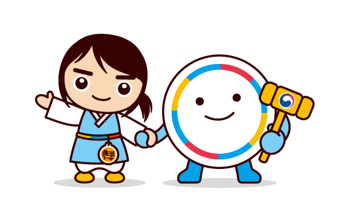

청렴직무능력검정 · 47 MINUTES
아는 청렴에서
아는 청렴에서
해내는 청렴으로
자격검정의 구조를 교육에 적용했습니다. 지식을 묻는 데서 멈추지
않고 실제 업무를 수행하고, 흩어진 증거를 모아 팀으로 해결합니다.
필기시험 → 실기시험 → 조별과제 → 종합판정을 QR 하나로 진행합니다.

CLASS MODE
교사와 학생이 함께 만드는 청렴교실
교사 PC ↔ 학생 모바일 실시간 연동


PROCESS
청렴ON 자격과정
각 시험 100점 채점 → 개인 강·약점 → 실천 환류
1수험등록QR · 3분
2필기시험청렴판단 6문항 · 10분
3실기시험절차·기준·감사 · 14분
4조별과제4역할 합동감사 · 15분
5종합판정환류·인증 · 5분
6 VALUES
청렴 6대 핵심 덕목
정직 · 약속 · 배려 · 책임 · 절제 · 공정
청렴ON은 자격과정의 수험등록·교사용 출석 확인·자격증 표시를 위해 학생 이름을 사용합니다. 전화번호·이메일은 수집하지 않으며, 교사가 수업 종료 후 수업방을 삭제하면 해당 수업의 이름·응답·실천약속도 함께 삭제하도록 설계했습니다.